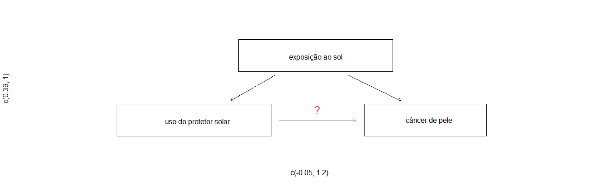

Prefácio

1 Introdução aos Bancos de Dados
Os cientistas procuram responder a perguntas usando métodos rigorosos e observações cuidadosas. Essas observações – coletadas a partir de notas de campo, pesquisas e experimentos – formam a espinha dorsal de uma investigação estatística e são chamadas de banco de dados. Estatística é o estudo de como melhor coletar, analisar e tirar conclusões dos dados. É útil colocar estatísticas no contexto de um processo geral de investigação:
Identifique uma questão ou problema.
Coletar dados relevantes sobre o tópico.
Analise os dados.
Faça uma conclusão.
Estatística como um assunto se concentra em tornar os estágios 2-4 objetivos, rigorosos e eficientes. Isto é, a estatística tem três componentes principais: como melhor podemos coletar dados? Como deve ser analisado? E o que podemos inferir da análise? Os tópicos que os cientistas investigam são tão diversos quanto as perguntas que fazem. No entanto, muitas dessas investigações podem ser abordadas com um pequeno número de técnicas de coleta de dados, ferramentas analíticas e conceitos fundamentais em inferência estatística. Este capítulo fornece um vislumbre desses e de outros temas que encontraremos ao longo do restante do livro. Apresentamos os princípios básicos de cada ramo e aprendemos algumas ferramentas ao longo do caminho. Nós vamos encontrar aplicações de outros campos, alguns dos quais não são tipicamente associados à ciência, mas, mesmo assim, podem se beneficiar do estudo estatístico.
1.1 Estudo de caso: usando stents para evitar derrames
Seção 1.1 introduz um desafio clássico na estatística: avaliar a eficácia de um tratamento médico. Os termos nesta seção e, na verdade, em grande parte deste capítulo, serão revisitados posteriormente no texto. O plano, por enquanto, é simplesmente ter uma noção do papel que as estatísticas podem desempenhar na prática.
Nesta seção, vamos considerar um experimento que estuda a eficácia dos stents no tratamento de pacientes com risco de acidente vascular cerebral1. Os stents são dispositivos colocados dentro dos vasos sanguíneos que auxiliam na recuperação do paciente após eventos cardíacos e reduzem o risco de um novo acidente ou morte. Muitos médicos esperavam que houvesse benefícios similares para pacientes com risco de derrame. Começamos escrevendo a pergunta principal que os pesquisadores esperam responder:
O uso de stents reduz o risco de acidente vascular cerebral?
Os pesquisadores que fizeram essa pergunta coletaram dados de 451 pacientes em risco. Cada paciente voluntário foi aleatoriamente designado para um dos dois grupos:
Grupo de tratamento: Os pacientes do grupo de tratamento receberam stent e tratamento médico. O manejo médico incluiu medicamentos, gerenciamento de fatores de risco e ajuda na modificação do estilo de vida.
Grupo de controle: Os pacientes do grupo controle receberam o mesmo tratamento médico do grupo de tratamento, mas não receberam stents.
Os pesquisadores distribuíram aleatoriamente 224 pacientes para o grupo de tratamento e 227 para o grupo de controle. Neste estudo, o grupo controle fornece um ponto de referência contra o qual podemos medir o impacto médico dos stents no grupo de tratamento.
Os pesquisadores estudaram o efeito dos stents em dois momentos: 30 dias após a inscrição e 365 dias após a inscrição. Os resultados de 5 pacientes estão resumidos na Tabela 1.1. Os resultados dos pacientes são registrados como “acidente vascular cerebral” ou “nenhum evento”, representando se o paciente teve ou não um acidente vascular cerebral no final de um período de tempo.
table1 <- data.frame(Paciente = c(1, 2, 3, 450, 451), Grupo = c('tratamento', 'tratamento','tratamento','controle','controle'),
trinta_dias = c('sem evento','acidente','sem evento','sem evento',
'sem evento'),
trezentos_sessenta_cinco_dias = c('sem evento',
'acidente','sem evento',
'sem evento','sem evento'))
colnames(table1) <- c('Paciente','Grupo','0-30 dias','0-365 dias')
knitr::kable(table1, caption = ' Resultados para cinco pacientes do estudo stent',
align = 'c')| Paciente | Grupo | 0-30 dias | 0-365 dias |
|---|---|---|---|
| 1 | tratamento | sem evento | sem evento |
| 2 | tratamento | acidente | acidente |
| 3 | tratamento | sem evento | sem evento |
| 450 | controle | sem evento | sem evento |
| 451 | controle | sem evento | sem evento |
Considerar os dados de cada paciente individualmente seria um caminho longo e complicado para responder à pergunta de pesquisa original. Em vez disso, executar uma análise estatística de dados nos permite considerar todos os dados de uma só vez. A Tabela 1.2 resume os dados brutos de uma maneira mais útil. Nesta tabela, podemos ver rapidamente o que aconteceu durante todo o estudo. Por exemplo, para identificar o número de pacientes no grupo de tratamento que tiveram um derrame dentro de 30 dias, olhamos no lado esquerdo da mesa na intersecção do tratamento com o derrame: 33.
table2 <- data.frame(rbind(c(33, 191, 45, 179),
c(13, 214, 28, 199),
c(46, 405, 73, 378)))
#organiza~ção dos nomes
rownames(table2) <- c('tratamento', 'controle','total')
colnames(table2) <- c('ataque cardíaco (0-30 dias)', 'sem evento (0-30 dias)',
'ataque cardíaco (0-365 dias)', 'sem evento (0-365 dias)')
knitr::kable(table2, align = 'c',
caption = 'Estatística descritiva para o estudo sobre stent')| ataque cardíaco (0-30 dias) | sem evento (0-30 dias) | ataque cardíaco (0-365 dias) | sem evento (0-365 dias) | |
|---|---|---|---|---|
| tratamento | 33 | 191 | 45 | 179 |
| controle | 13 | 214 | 28 | 199 |
| total | 46 | 405 | 73 | 378 |
Podemos calcular estatísticas através da tabela. Uma estatística é um único número que resume uma grande quantidade de dados.3 Por exemplo, os principais resultados do estudo após um ano podem ser descritos por duas estatísticas resumidas: a proporção de pessoas que tiveram um derrame nos grupos de tratamento e de controle.
Proporção que teve um derrame no grupo tratamento (stent): \[\frac{45}{224} = 0.20 = 20\%\]
Proporção que teve um derrame no grupo de controle: \[\frac{28}{227} = 0.12 = 12\%\]
Estas duas estatísticas resumidas são úteis para procurar diferenças nos grupos, e temos uma surpresa: mais 8% de pacientes no grupo de tratamento tiveram um derrame! Isto é importante por duas razões. Primeiro, é contrário ao que os médicos esperavam, que os stents reduziriam a taxa de derrames. Segundo, leva a uma questão estatística: os dados mostram uma diferença “real” entre os grupos?
Essa segunda questão é sutil. Suponha que você jogue uma moeda 100 vezes. Embora a chance de uma moeda cair cara em uma dada moeda seja de 50%, provavelmente não observaremos exatamente 50 caras. Esse tipo de flutuação faz parte de praticamente qualquer tipo de processo de geração de dados. É possível que a diferença de 8% no estudo do stent se deva a essa variação natural. No entanto, quanto maior a diferença que observamos (para um tamanho de amostra específico), menos crível é que a diferença seja devida ao acaso. Então, o que estamos realmente perguntando é o seguinte: a diferença é tão grande que devemos rejeitar a noção de que isso se deve ao acaso?
Embora ainda não tenhamos nossas ferramentas estatísticas para resolver totalmente essa questão por conta própria, podemos compreender as conclusões da análise publicada: havia evidências convincentes de danos por stents neste estudo de pacientes com AVC.
Seja cuidadoso: não generalizamos os resultados deste estudo para todos os pacientes e todos os stents. Este estudo analisou pacientes com características muito específicas que se voluntariaram para fazer parte deste estudo e que podem não ser representativos de todos os pacientes com AVC. Além disso, existem muitos tipos de stents e este estudo considerou apenas o stent Wingspan auto-expansível (Boston Scientific). No entanto, este estudo nos deixa uma lição importante: devemos manter nossos olhos abertos para surpresas.
1.2 Noções básicas de dados
Apresentação eficaz e descrição dos dados é um primeiro passo na maioria das análises. Esta seção apresenta uma estrutura para organizar dados, bem como alguma terminologia que será usada ao longo deste livro.
1.2.1 Observações, variáveis e matrizes de dados
A Tabela 1.3 exibe as linhas 1, 2, 3 e 50 de um conjunto de dados referentes a 50 e-mails recebidos durante o início de 2012. Essas observações serão chamadas de conjunto de dados email50 e são uma amostra aleatória de um conjunto de dados maior vamos ver na Seção ??.
library(openintro)
data("email50")
table3 <- email50[,c('spam', 'num_char', 'line_breaks', 'format', 'number')]
table3$spam <- ifelse(table3$spam == '0', 'não', 'sim')
table3$format <- ifelse(table3$format == '0', 'text', 'html')
knitr::kable(table3[c(1:3,50),], align = 'c',
caption = 'Quatro linhas da matriz de dados email50.')| spam | num_char | line_breaks | format | number | |
|---|---|---|---|---|---|
| 1 | não | 21.705 | 551 | html | small |
| 2 | não | 7.011 | 183 | html | big |
| 3 | sim | 0.631 | 28 | text | none |
| 50 | não | 15.829 | 242 | html | small |
Cada linha na tabela representa um único e-mail ou caso.4 As colunas representam características, chamadas variéveis, para cada um dos e-mails. Por exemplo, a primeira linha representa o email 1, que não é spam, contém 21,705 caracteres, 551 quebras de linha, está escrito em formato HTML e contém apenas números pequenos.
Na prática, é especialmente importante fazer perguntas esclarecedoras para garantir que aspectos importantes dos dados sejam compreendidos. Por exemplo, é sempre importante ter certeza de que sabemos o que cada variável significa e as unidades de medida. As descrições de todas as cinco variáveis de e-mail são dadas na Tabela 1.4.
table4 <- data.frame(variavel = colnames(table3),
descricao = c('Especifica se a mensagem eras spam',
'O número de caracteres no email',
'O número de quebras de linha no email (não incluindo quebras por figura)',
' Indica se o email continha formatação especial, como negrito, tabelas, ou links, o que indicaria que a mensagem está no formato HTML',
'Indica se o email não tinha nenhum número, um pequeno número (menor que 1 milhão), ou um número grande'))
knitr::kable(table4, align = 'r',
caption = ' Variáveis e suas descrições para o conjunto de dados email50')| variavel | descricao |
|---|---|
| spam | Especifica se a mensagem eras spam |
| num_char | O número de caracteres no email |
| line_breaks | O número de quebras de linha no email (não incluindo quebras por figura) |
| format | Indica se o email continha formatação especial, como negrito, tabelas, ou links, o que indicaria que a mensagem está no formato HTML |
| number | Indica se o email não tinha nenhum número, um pequeno número (menor que 1 milhão), ou um número grande |
Os dados na Tabela 1.3 representam a matriz de dados, que é uma maneira comum de organizar dados. Cada linha de uma matriz de dados corresponde a um caso único e cada coluna corresponde a uma variável. Uma matriz de dados para o estudo de acidente vascular cerebral foi introduzida na Seção 1.1 é mostrado na Tabela 1.1, onde os casos eram pacientes e havia três variáveis registradas para cada paciente.
As matrizes de dados são uma maneira conveniente de registrar e armazenar dados. Se outro indivíduo ou caso for adicionado ao conjunto de dados, uma linha adicional poderá ser facilmente adicionada. Da mesma forma, outra coluna pode ser adicionada para uma nova variável.
condado. Este conjunto de dados inclui informações sobre cada município: seu nome, o estado em que reside, sua população em 2000 e 2010, gastos federais per capita, taxa de pobreza e cinco características adicionais. Como esses dados podem ser organizados em uma matriz de dados? Lembrete: procure nas notas de rodapé as respostas para exercícios no texto.5
Sete colunas do conjunto de dados município são mostrados na Tabela 1.5, e as variáveis estão resumidas na Tabela 1.6. Esses dados foram coletados no site do Censo dos EUA6.
data(county)
knitr::kable(head(county, 7), align = 'c',
caption = 'Sete linhas do conjunto de dados condado.')| name | state | pop2000 | pop2010 | fed_spend | poverty | homeownership | multiunit | income | med_income |
|---|---|---|---|---|---|---|---|---|---|
| Autauga County | Alabama | 43671 | 54571 | 6.068095 | 10.6 | 77.5 | 7.2 | 24568 | 53255 |
| Baldwin County | Alabama | 140415 | 182265 | 6.139862 | 12.2 | 76.7 | 22.6 | 26469 | 50147 |
| Barbour County | Alabama | 29038 | 27457 | 8.752158 | 25.0 | 68.0 | 11.1 | 15875 | 33219 |
| Bibb County | Alabama | 20826 | 22915 | 7.122016 | 12.6 | 82.9 | 6.6 | 19918 | 41770 |
| Blount County | Alabama | 51024 | 57322 | 5.130910 | 13.4 | 82.0 | 3.7 | 21070 | 45549 |
| Bullock County | Alabama | 11714 | 10914 | 9.973062 | 25.3 | 76.9 | 9.9 | 20289 | 31602 |
| Butler County | Alabama | 21399 | 20947 | 9.311835 | 25.0 | 69.0 | 13.7 | 16916 | 30659 |
table6 <- data.frame(variavel = colnames(county),
descricao = c('Nome do condado',
'Estado onde fica o condado (também incluso o distrito de Colúmbia)',
'População em 2000',
'População em 2010',
'Gasto federal per capita',
'Porcentagem da população na pobreza',
'Porcentagem da população que vive em sua própria casa ou vive com o dono (e.g. crianças vivendo com pais que são donos da casa)',
' Percentagem de unidades habitacionais que fazem parte de estruturas multi unidade (e.g. apartamentos)',
'Renda per capita',
'Renda por habitação mediana para o condado, onde a renda por habitação é igual a renda total de todos ocupantes com mais de 15 anos de idade'))
knitr::kable(table6, align = 'r',
caption = 'Variáveis e suas descrições para o banco de dados condado.')| variavel | descricao |
|---|---|
| name | Nome do condado |
| state | Estado onde fica o condado (também incluso o distrito de Colúmbia) |
| pop2000 | População em 2000 |
| pop2010 | População em 2010 |
| fed_spend | Gasto federal per capita |
| poverty | Porcentagem da população na pobreza |
| homeownership | Porcentagem da população que vive em sua própria casa ou vive com o dono (e.g. crianças vivendo com pais que são donos da casa) |
| multiunit | Percentagem de unidades habitacionais que fazem parte de estruturas multi unidade (e.g. apartamentos) |
| income | Renda per capita |
| med_income | Renda por habitação mediana para o condado, onde a renda por habitação é igual a renda total de todos ocupantes com mais de 15 anos de idade |
1.2.2 Tipos de variáveis
Examine as variáveis fed_spend, pop2010, state, e med_income no conjunto de dados condado. Cada uma dessas variáveis é inerentemente diferente das outras três, mas muitas delas compartilham certas características.
Primeiro considere fed_spend, que é dito ser uma variável numérica, pois pode ter uma ampla gama de valores numéricos e é sensato adicionar, subtrair ou obter médias com esses valores. Por outro lado, não classificaríamos os códigos de área de telefone como numéricos, uma vez que sua média, soma e diferença não têm um significado claro.
A pop2010 variável também é numérica, embora pareça ser um pouco diferente de fed_spend. Esta variável da contagem da população só pode ter números inteiros não negativos (\(1,2,3,\dots\)). Por essa razão, a variável população é dita ser discreta já que só pode assumir valores numéricos com saltos. Por outro lado, diz-se que a variável gasto federal é contínua.
A variável state pode levar até 51 valores, contabilizando Washington, DC: AL,\(\dots\), e WY. Porque as próprias respostas são categorias, state é chamada uma variável categórica, e os valores possíveis são chamados de níveis da variável.
knitr::include_graphics("variables.png")Figura 1.1: Repartição das variáveis em seus respectivos tipos.
O número de irmãos e a altura dos alunos representam variáveis numéricas. Como o número de irmãos é uma contagem, ele é discreto. Altura varia continuamente, por isso é uma variável numérica contínua. A última variável classifica os alunos em duas categorias - aqueles que fizeram e aqueles que não fizeram um curso de estatística – o que torna essa variável categórica.
1.2.3 Relações entre variáveis
Muitas análises são motivadas por um pesquisador que procura uma relação entre duas ou mais variáveis. Um cientista social pode gostar de responder a algumas das seguintes perguntas:
Os gastos federais, em média, são maiores ou menores nos condados com altas taxas de pobreza?
Se a variável casa própria for menor que a média nacional em um município, a percentagem de estruturas de várias unidades naquele município provavelmente estará acima ou abaixo da média nacional?
Quais municípios têm uma renda média maior: aqueles que decretam uma ou mais proibições de fumar ou aqueles que não a decretaram?
Para responder a essas perguntas, os dados devem ser coletados, como o conjunto de dados condado mostrado na Tabela 1.5. Examinar as estatísticas-resumo poderia fornecer insights para cada uma das três perguntas sobre condados. Além disso, os gráficos podem ser usados para resumir visualmente os dados e são úteis para responder a essas perguntas também. Gráficos de dispersão são um tipo de gráfico usado para estudar a relação entre duas variáveis numéricas. A Figura 1.2 compara as variáveis fed_spend e poverty.
Cada ponto representa um único condado. Por exemplo, o ponto realçado corresponde ao Condado 1088 no conjunto de dados: Owsley County, Kentucky, que tinha uma taxa de pobreza de 41,5% e gastos federais de $21,50 per capita. O gráfico de dispersão sugere uma relação entre as duas variáveis: os municípios com alta taxa de pobreza também tendem a ter um pouco mais de gastos federais. Podemos pensar em por que essa relação existe e investigar cada ideia para determinar qual é a explicação mais razoável.
ggplot(data = county, mapping = aes(x = poverty, y = fed_spend)) +
theme(panel.border = element_rect(colour = "black", fill = NA, size = 1)) +
labs(x = 'Pobreza', y = 'Gasto federal per capita') +
geom_point() +
ylim(0, 30) +
scale_x_continuous(breaks = seq(0, 50, 10)) +
geom_segment(aes(x = 0, y = 21.5, xend = 41.5, yend = 21.5),
linetype = "dashed", color = 'red') +
geom_segment(aes(x = 41.5, y = 0, xend = 41.5, yend = 21.5),
linetype = "dashed", color = 'red')Figura 1.2: Um gráfico de dispersão mostrando fed_spend contra poverty.
email50, descritos na Tabela 1.4. Crie duas perguntas sobre os relacionamentos entre essas variáveis que são de seu interesse.8
Diz-se que as duas variáveis estão associadas porque o gráfico mostra um padrão discernível. Quando duas variáveis mostram alguma conexão umas com as outras, elas são chamadas variáveis associadas. Variáveis associadas também podem ser chamadas variáveis dependentes e vice-versa.
ggplot(data = countyComplete,
mapping = aes(x = housing_multi_unit, y = home_ownership)) +
theme(panel.border = element_rect(colour = "black", fill = NA, size = 1)) +
labs(x = 'Porcentagem de Unidades em Estruturas de Multi-Unidades',
y = 'Proporção de Casa Própria') +
geom_point()Figura 1.3: Gráfico de dispersão entre a proporção de casa própria e a porcentagem de unidades eem estruturas de multi-unidades
Parece que quanto maior a fração de unidades em estruturas com várias unidades, menor a taxa de casa própria. Como existe alguma relação entre as variáveis, elas estão associadas.
Porque há uma tendência de queda na Figura 1.3 – municípios com mais unidades em estruturas de várias unidades estão associados a uma menor casa própria – essas variáveis são consideradas associadas negativamente. Uma associação positiva é mostrada na relação entre as variáveis poverty e fed_spend representadas na Figura 1.2, onde os municípios com maiores taxas de pobreza tendem a receber mais gastos federais per capita. Se duas variáveis não estão associadas, então elas são independentes. Ou seja, duas variáveis são independentes se não houver relação evidente entre as duas.
Associado ou independente, não ambos: Um par de variáveis estão relacionadas de alguma forma (associadas) ou não (independentes). Nenhum par de variáveis são associadas e independentes.
1.3 Visão geral dos princípios de coleta de dados
O primeiro passo na condução de pesquisas é identificar tópicos ou questões que devem ser investigados. Uma pergunta de pesquisa claramente apresentada é útil para identificar quais assuntos ou casos devem ser estudados e quais variáveis são importantes. Também é importante considerar como os dados são coletados para que sejam confiáveis e ajudem a atingir as metas de pesquisa.
1.3.1 Populações e amostras
Considere as três perguntas de pesquisa a seguir:
Qual é o teor médio de mercúrio no peixe-espada do Oceano Atlântico?
Nos últimos 5 anos, qual é o tempo médio para concluir um curso para alunos de graduação da Duke?
Um novo medicamento reduz o número de mortes em pacientes com doença cardíaca grave?
Cada questão de pesquisa refere-se a uma população alvo. Na primeira questão, a população alvo é todo o peixe-espada no oceano Atlântico, e cada peixe representa um caso. Muitas vezes, é muito caro coletar dados para todos os casos em uma população. Em vez disso, uma amostra é obtida. A amostra representa um subconjunto dos casos e geralmente é uma pequena fração da população. Por exemplo, 60 peixes-espada (ou algum outro número) na população podem ser selecionados, e esses dados de amostra podem ser usados para fornecer uma estimativa da média populacional e responder à pergunta da pesquisa.
1.3.2 Evidência anedótica
Considere as seguintes respostas possíveis para as três questões de pesquisa:
Um homem no noticiário tem envenenamento por mercúrio por comer espadarte, então a concentração média de mercúrio em espadarte deve ser perigosamente alta.
Eu conheci dois alunos que levaram mais de sete anos para se formar na Duke, então deve levar mais tempo para se formar na Duke do que em muitas outras faculdades.
O pai da minha amiga teve um ataque cardíaco e morreu depois que eles lhe deram uma nova droga para doença cardíaca, então a droga não deve funcionar.
Cada conclusão é baseada em dados. No entanto, existem dois problemas. Primeiro, os dados representam apenas um ou dois casos. Em segundo lugar, e mais importante, não está claro se esses casos são realmente representativos da população. Dados coletados dessa maneira casual são chamados evidência anedótica.
knitr::include_graphics("mnWinter.jpg")
Figura 1.4: Em fevereiro de 2010, alguns especialistas da mídia citaram uma grande tempestade de neve como evidência válida contra o aquecimento global. Como o comediante Jon Stewart apontou: É uma tempestade, em uma região, de um país.
Evidência anedótica: Tenha cuidado com os dados coletados de maneira aleatória. Tal evidência pode ser verdadeira e verificável, mas pode apenas representar casos extraordinários.
A evidência anedótica é tipicamente composta de casos incomuns que lembramos com base em suas características marcantes. Por exemplo, é mais provável que nos lembremos das duas pessoas que conhecemos que levaram sete anos para se formar do que as outras seis que se formaram em quatro anos. Em vez de olhar para os casos mais incomuns, devemos examinar uma amostra de muitos casos que representam a população.
1.3.3 Amostragem de uma população
Podemos tentar estimar o tempo para a graduação de alunos de graduação da Duke nos últimos 5 anos, coletando uma amostra de alunos. Todos os graduados nos últimos 5 anos representam a população, e graduados que são amostra. Em geral, procuramos sempre aleatoriamente selecionar uma amostra de uma população. O tipo mais básico de seleção aleatória é equivalente a como os sorteios são conduzidos. Por exemplo, na seleção de graduados, poderíamos escrever o nome de cada graduado em um bilhete de rifa e comprar 100 ingressos. Os nomes selecionados representariam uma amostra aleatória de 100 graduados.
knitr::include_graphics("popToSampleGraduates.png")Figura 1.5: Neste gráfico, cinco graduados são selecionados aleatoriamente da população para serem incluídos na amostra.
Por que escolher uma amostra aleatoriamente? Por que não escolher apenas uma amostra à mão? Considere o seguinte cenário.
Talvez ela escolheria um número desproporcional de graduados em campos relacionados à saúde. Ou talvez a seleção dela fosse bem representativa da população. Ao selecionar amostras manualmente, corremos o risco de escolher uma amostra tendenciosa, mesmo que esse preconceito não seja intencional ou difícil de discernir.
knitr::include_graphics('popToSubSampleGraduates.png')Figura 1.6: Em vez de amostragem de todos os graduados igualmente, um nutricionista pode, inadvertidamente, escolher graduados com cursos relacionados à saúde de forma desproporcional.
Se alguém tiver permissão para escolher exatamente quais graduados foram incluídos na amostra, é totalmente possível que a amostra possa ser distorcida aos interesses dessa pessoa, o que pode ser totalmente não intencional. Isso introduz um viés na amostra. Uma amostragem aleatória ajuda a resolver esse problema. A amostra aleatória mais básica é chamada de amostra aleatória simples, e é equivalente a usar um sorteio para selecionar casos. Isso significa que cada caso na população tem uma chance igual de ser incluído e não há conexão implícita entre os casos na amostra.
Às vezes, uma amostra aleatória simples é difícil de implementar e um método alternativo é útil. Um método substituto é uma amostra sistemática, onde um caso é amostrado depois de deixar um número fixo de outros, digamos 10 outros casos, passar. Como essa abordagem usa um mecanismo que não é facilmente sujeito a vieses pessoais, geralmente produz uma amostra razoavelmente representativa. Este livro se concentrará em amostras aleatórias, já que o uso de amostras sistemáticas é incomum e requer considerações adicionais do contexto.
O ato de pegar uma amostra aleatória simples ajuda a minimizar o viés. No entanto, o preconceito pode surgir de outras formas. Mesmo quando as pessoas são escolhidas aleatoriamente, por exemplo, deve-se ter cautela se a não resposta está alta. Por exemplo, se apenas 30% das pessoas amostradas aleatoriamente para uma pesquisa realmente responderem, então não está claro se os resultados são representativos de toda a população. Esse termo viés de não resposta pode distorcer resultados.
knitr::include_graphics('surveySample.png')Figura 1.7: Devido à possibilidade de não resposta, os estudos de pesquisa só podem atingir um determinado grupo dentro da população. É difícil, e muitas vezes impossível, corrigir completamente esse problema.
Outro método comum é uma amostra de conveniência, onde os indivíduos que são facilmente acessíveis têm maior probabilidade de serem incluídos na amostra. Por exemplo, se uma pesquisa política for feita em pessoas que andam no Bronx, isso não representará toda a cidade de Nova York. Muitas vezes é difícil discernir qual subpopulação uma amostra de conveniência representa.
1.3.4 Variáveis explicativas e de resposta
Considere a pergunta que foi feita para o conjunto de dados condado na seção 1.2.3:
- Os gastos federais, em média, são maiores ou menores nos condados com altas taxas de pobreza?
Se suspeitarmos que a pobreza possa afetar os gastos em um país, então a pobreza é a variável explanatória e o gasto federal é a variável resposta no relacionamento.11
Dica: Variáveis explicativas e resposta: Para identificar a variável explicativa em um par de variáveis, identifique qual das duas é suspeita de afetar a outra e planeje uma análise apropriada.
Cuidado: associação não implica causalidade: Rotular variáveis como explicativa e resposta não garante que a relação entre os dois seja realmente causal, mesmo se houver uma associação identificada entre as duas variáveis. Usamos esses rótulos apenas para rastrear qual variável suspeitamos que afeta a outra.
Em alguns casos, não há variável explicativa ou resposta.
Considere a seguinte pergunta da seção 1.2.3:
- Se a casa própria for menor que a média nacional em um município, a percentagem de estruturas de várias unidades naquele município provavelmente estará acima ou abaixo da média nacional?
É difícil decidir qual dessas variáveis deve ser considerada a variável explicativa e resposta, ou seja, a direção é ambígua, portanto, nenhum rótulo explicativo ou de resposta é sugerido aqui.
1.3.5 Introduzindo estudos observacionais e experimentos
Existem dois tipos principais de coleta de dados: estudos observacionais e experimentos.
Pesquisadores realizam um estudo observacional quando coletam dados de uma maneira que não interfere diretamente na forma como os dados surgem. Por exemplo, os pesquisadores podem coletar informações por meio de pesquisas, revisar registros médicos ou da empresa ou seguir uma coorte de muitos indivíduos semelhantes para estudar por que certas doenças podem se desenvolver. Em cada uma dessas situações, os pesquisadores simplesmente observam os dados que surgem. Em geral, estudos observacionais podem fornecer evidências de uma associação natural entre variáveis, mas não podem, por si só, mostrar uma conexão causal.
Quando os pesquisadores querem investigar a possibilidade de uma conexão causal, eles conduzem um experimento. Geralmente, haverá uma variável explicativa e uma variável de resposta. Por exemplo, podemos suspeitar que administrar uma droga reduzirá a mortalidade em pacientes com ataque cardíaco no ano seguinte. Para verificar se existe realmente uma conexão causal entre a variável explicativa e a resposta, os pesquisadores coletarão uma amostra de indivíduos e os dividirão em grupos. Os indivíduos em cada grupo são atribuídos a um tratamento. Quando os indivíduos são aleatoriamente designados para um grupo, o experimento é chamado de experimento aleatório. Por exemplo, cada paciente com ataque cardíaco no estudo pode ser aleatoriamente designado, talvez jogando uma moeda, em um dos dois grupos: o primeiro grupo recebe um placebo e o segundo recebe o medicamento. Veja o estudo de caso na Seção 1.1 para outro exemplo de um experimento, embora esse estudo não empregou um placebo.
Associação \(\neq\) causa: Em geral, a associação não implica causalidade, e a causalidade só pode ser inferida a partir de um experimento randomizado.
1.4 Estudos observacionais e estratégias de amostragem
1.4.1 Estudos observacionais
Geralmente, os dados em estudos observacionais são coletados apenas pelo monitoramento do que ocorre, enquanto os experimentos exigem que a variável explicativa primária em um estudo seja atribuída para cada sujeito pelos pesquisadores.
Fazer conclusões causais baseadas em experimentos é geralmente razoável. No entanto, fazer as mesmas conclusões causais com base em dados observacionais pode ser traiçoeiro e não é recomendado. Assim, estudos observacionais são geralmente suficientes apenas para mostrar associações.
Algumas pesquisas anteriores nos dizem que usar protetor solar realmente reduz o risco de câncer de pele, então talvez haja outra variável que pode explicar essa associação hipotética entre uso de filtro solar e câncer de pele. Uma informação importante que está ausente é a exposição ao sol. Se alguém está no sol o dia todo, ela é mais propensa a usar protetor solar e mais chances de ter câncer de pele. A exposição ao sol não é contabilizada na simples investigação.
knitr::include_graphics('sunCausesCancer.png')
A exposição ao sol é o que é chamado de variável de confusão13. Que é uma variável correlacionada com as variáveis explicativas e respostas. Enquanto um método para justificar a tomada de conclusões causais a partir de estudos observacionais é exaurir a busca por variáveis de confusão, não há garantia de que todas as variáveis confusas possam ser examinadas ou medidas.
Da mesma forma, o conjunto de dados condado é um estudo observacional com variáveis confundidoras, e seus dados não podem ser facilmente usados para fazer conclusões causais.
Prática Orientada 1.8 A Figura 1.3 mostra uma associação negativa entre a taxa de propriedade e a porcentagem de estruturas de múltiplas unidades em um município. No entanto, não é razoável concluir que existe uma relação causal entre as duas variáveis. Sugira uma ou mais outras variáveis que possam explicar a relação visível na Figura 1.3.14
Estudos observacionais vêm em duas formas: estudos prospectivos e retrospectivos. Um estudo prospectivo identifica os indivíduos e coleta informações à medida que os eventos se desdobram. Por exemplo, pesquisadores médicos podem identificar e acompanhar um grupo de indivíduos semelhantes durante muitos anos para avaliar as possíveis influências do comportamento no risco de câncer. Um exemplo de tal estudo é The Nurses ’Health Study, iniciado em 1976 e expandido em 198915. Este estudo prospectivo recruta enfermeiros registrados e, em seguida, coleta dados deles usando questionários. Estudos retrospectivos coletam dados após os eventos terem ocorrido, por exemplo os pesquisadores podem revisar os eventos passados nos registros médicos. Alguns conjuntos de dados, como condado, podem conter variáveis coletadas prospectiva e retrospectivamente. Os governos locais coletam prospectivamente algumas variáveis à medida que os eventos se desenrolam (por exemplo, vendas de varejo) enquanto o governo federal coletou retrospectivamente outras durante o censo de 2010 (por exemplo, contagem da população do condado).
1.4.2 Quatro métodos de amostragem (tópico especial)
Quase todos os métodos estatísticos são baseados na noção de aleatoriedade implícita. Se os dados observacionais não forem coletados em uma estrutura aleatória de uma população, esses métodos estatísticos – as estimativas e os erros associados às estimativas – não são confiáveis. Aqui, consideramos quatro técnicas de amostragem aleatória: amostragem simples, estratificada, por conglomerados e de múltiplos estágios. Figuras ?? e @ref(fig:clustermultistage} fornecem representações gráficas dessas técnicas.
data(COL)
set.seed(4)
N <- 108
n <- 18
colSamp <- COL[4]
PCH <- rep(c(1, 3, 20)[3], 3)
col <- rep(COL[1], N)
pch <- PCH[match(col, COL)]
BuildSRS()Figura 1.8: Exemplos de amostragem simples e amostragem estratificada. No painel superior, a amostragem aleatória simples foi usada para selecionar aleatoriamente os 18 casos. No painel inferior, utilizou-se amostragem estratificada: os casos foram agrupados em estratos e, em seguida, a amostragem aleatória simples foi feita para cada estrato.
BuildStratified()Figura 1.9: Exemplos de amostragem simples e amostragem estratificada. No painel superior, a amostragem aleatória simples foi usada para selecionar aleatoriamente os 18 casos. No painel inferior, utilizou-se amostragem estratificada: os casos foram agrupados em estratos e, em seguida, a amostragem aleatória simples foi feita para cada estrato.
dev.off()## null device
## 1A amostragem aleatória simples é provavelmente a forma mais intuitiva de amostragem aleatória. Considere os salários dos jogadores da Major League Baseball (MLB), onde cada jogador é membro de uma das 30 equipes da liga. Para pegar uma simples amostra aleatória de 120 jogadores de beisebol e seus salários da temporada de 2010, poderíamos escrever os nomes dos 828 jogadores daquela temporada em pedaços de papel, colocar os pedaços de papel num balde, sacudir o balde até termos certeza de que os nomes estão todos misturados, depois escreva os nomes tirados até que tenhamos a amostra de 120 jogadores. Em geral, uma amostra é chamada de aleatória simples se cada caso na população tiver uma chance igual de ser incluído na amostra final e saber que um caso é incluído em uma amostra não fornece informações úteis sobre quais outros casos estão incluídos.
A amostragem Estratificada é uma estratégia de amostragem de ‘divisão e conquista’. A população é dividida em grupos chamados estratos. Os estratos são escolhidos de modo que os casos semelhantes sejam agrupados e, em seguida, um segundo método de amostragem, geralmente amostragem aleatória simples, é empregado dentro de cada estrato. No exemplo do salário no beisebol, as equipes poderiam representar os estratos, já que algumas equipes têm muito mais dinheiro (até 4 vezes mais!). Então, podemos aleatoriamente amostrar 4 jogadores de cada equipe para um total de 120 jogadores.
A amostragem estratificada é especialmente útil quando os casos em cada estrato são muito semelhantes em relação ao resultado de interesse. A desvantagem é que analisar dados de uma amostra estratificada é uma tarefa mais complexa do que analisar dados de uma amostra aleatória simples. Os métodos de análise introduzidos neste livro precisariam ser estendidos para analisar os dados coletados usando amostragem estratificada.
Por que seria bom que os casos dentro de cada estrato fossem muito semelhantes?Podemos obter uma estimativa mais estável para a subpopulação em um estrato, se os casos forem muito semelhantes. Essas estimativas aprimoradas para cada subpopulação nos ajudarão a construir uma estimativa confiável para toda a população.
Em uma amostragem por conglomerados, nós dividimos a população em muitos grupos, chamados clusters. Em seguida, amostramos um número fixo de clusters e incluímos todas as observações de cada um desses clusters na amostra. Uma amostra de vários estágios é como uma amostra de cluster, mas em vez de manter todas as observações em cada cluster, coletamos uma amostra aleatória em cada cluster selecionado.
par(mfrow = c(1, 2))
BuildCluster()
BuildMultistage()![Exemplos de comglomerados e amostragem de múltiplos estágios. No painel superior, foi usada a amostragem por conglomerados. Aqui, os dados foram colocados em nove clusters, três desses clusters foram amostrados e todas as observações dentro desses três clusters foram incluídas na amostra. No painel inferior, foi utilizada amostragem multiestágios. Diferencia-se da amostragem por conglomerados na dos clusters selecionados, selecionamos aleatoriamente um subconjunto de cada cluster a ser incluído na amostra.](ch1_intro_files/figure-html/clustermultistage-1.png)
Figura 1.10: Exemplos de comglomerados e amostragem de múltiplos estágios. No painel superior, foi usada a amostragem por conglomerados. Aqui, os dados foram colocados em nove clusters, três desses clusters foram amostrados e todas as observações dentro desses três clusters foram incluídas na amostra. No painel inferior, foi utilizada amostragem multiestágios. Diferencia-se da amostragem por conglomerados na dos clusters selecionados, selecionamos aleatoriamente um subconjunto de cada cluster a ser incluído na amostra.
Às vezes, a amostragem por conglomerados ou em múltiplos estágios pode ser mais econômica do que as técnicas alternativas de amostragem. Além disso, ao contrário da amostragem estratificada, essas abordagens são mais úteis quando há muita variabilidade caso a caso dentro de um cluster, mas os próprios clusters não parecem muito diferentes um do outro. Por exemplo, se os bairros representarem clusters, então o cluster ou a amostragem multi-estágio funcionará melhor quando os bairros forem muito diversos. Uma desvantagem desses métodos é que as técnicas de análise mais avançadas são normalmente necessárias, embora os métodos neste livro possam ser estendidos para lidar com esses dados.
Uma simples amostra aleatória provavelmente atrairia indivíduos de todas as 30 aldeias, o que poderia tornar a coleta de dados extremamente cara. A amostragem estratificada seria um desafio, pois não está claro como construiríamos estratos de indivíduos semelhantes. No entanto, a amostragem por conglomerados ou a amostragem em múltiplos estágios parece ser uma boa ideia. Se decidirmos usar a amostragem de múltiplos estágios, podemos selecionar aleatoriamente metade das aldeias e, em seguida, selecionar aleatoriamente 10 pessoas de cada uma. Isso provavelmente reduziria nossos custos de coleta de dados substancialmente em comparação a uma amostra aleatória simples, e essa abordagem ainda nos forneceria informações confiáveis.
1.5 Experimentos
Estudos em que os pesquisadores atribuem tratamentos a casos são chamados de experimentos. Quando esta tarefa inclui aleatoriedade, por exemplo, usando uma moeda para decidir qual tratamento um paciente recebe, é chamado de experimento aleatório. Experimentos aleatórios são fundamentalmente importantes quando se tenta mostrar uma conexão causal entre duas variáveis.
1.6 $ Princípios do design experimental
Experimentos randomizados são geralmente construídos em quatro princípios.
Controlando: Os pesquisadores atribuem tratamentos aos casos e fazem o melhor que podem para controlar quaisquer outras diferenças nos grupos. Por exemplo, quando os pacientes tomam uma droga em forma de pílula, alguns pacientes tomam a pílula com apenas um gole de água enquanto outros a tomam com um copo inteiro de água. Para controlar o efeito do consumo de água, o médico pode pedir a todos os pacientes que bebam um copo de água com a pílula.
Randomização: Pesquisadores randomizam os pacientes em grupos de tratamento para responder por variáveis que não podem ser controladas. Por exemplo, alguns pacientes podem ser mais suscetíveis a uma doença do que outros devido a seus hábitos alimentares. A randomização dos pacientes no grupo de tratamento ou controle ajuda a nivelar essas diferenças e também evita que vieses acidentais entrem no estudo.
Replicação: Quanto mais casos os pesquisadores observam, mais precisamente eles podem estimar o efeito da variável explicativa sobre a resposta. Em um único estudo, nós replicamos coletando uma amostra suficientemente grande. Além disso, um grupo de cientistas pode replicar um estudo inteiro para verificar uma descoberta anterior.
Bloqueio: Os pesquisadores às vezes sabem ou suspeitam que variáveis, além do tratamento, influenciam a resposta. Nestas circunstâncias, eles podem primeiro agrupar os indivíduos com base nesta variável bloqueadora e depois randomiza os casos dentro de cada bloco para os grupos de tratamento. Esta estratégia é frequentemente referida como bloqueio. Por exemplo, se estivermos analisando o efeito de um medicamento nos ataques cardíacos, podemos dividir os pacientes no estudo em blocos de baixo risco e alto risco, e então atribuir aleatoriamente metade dos pacientes de cada bloco ao grupo controle e outra metade para o grupo de tratamento, como mostrado na Figura 1.11. Essa estratégia garante que cada grupo de tratamento tenha um número igual de pacientes de baixo risco e alto risco.
library(openintro)
set.seed(2)
xlim <- c(0, 1)
slimBox3 <- 0.03
data(COL)
plot(c(0, 2.9),
type = "n",
axes = FALSE,
xlab = "",
ylab = "",
xlim = c(-0.1, 1.1))
rect(0, 2.2, 1, 2.9)
text(0.5, 2.885, "Numbered patients",
pos = 3, cex = 0.9)
rect(0, 1.2, 0.45, 1.9)
rect(0.55, 1.2, 1, 1.9)
arrows(0.56, 2.17, 0.75, 2.02, length = 0.1, lwd = 1.37)
arrows(0.44, 2.17, 0.25, 2.02, length = 0.1, lwd = 1.37)
text(0.5, 2.07, "create\nblocks", cex = 0.8)
text(0.2, 1.89, "Low-risk patients", pos = 3, cex = 0.7)
text(0.2+0.55, 1.89, "High-risk patients", pos = 3, cex = 0.7)
rect(0, 0.48, 1, 0.9, border = COL[5])
rect(0, 0.00, 1, 0.42, border = COL[5])
arrows(0.09, 1.16, y1 = 1, length = 0.1, lwd = 1.37)
text(0.1, 1.08, "randomly\nsplit in half", cex = 0.7, pos = 4)
arrows(0.12 + 0.55, 1.16, y1 = 1, length = 0.1, lwd = 1.37)
text(0.13 + 0.55, 1.08, "randomly\nsplit in half", cex = 0.7, pos = 4)
# _____ Inner Box _____ #
rect(0.02, 0.50, 0.41, 0.88, border = COL[5,3])
rect(0.02, 0.02, 0.41, 0.40, border = COL[5,3])
rect(0.57+slimBox3, 0.50, 0.98, 0.88, border = COL[5,3])
rect(0.57+slimBox3, 0.02, 0.98, 0.40, border = COL[5,3])
# _____ Labels _____ #
rect(-0.05, 0.39 + 0.47, 0.14, 0.45 + 0.47,
col = "#FFFFFF",
border = COL[5])
text(0.02, 0.424 + 0.47,
"Control",
cex = 0.6,
col = COL[5])
rect(-0.05, 0.39, 0.14, 0.45,
col = "#FFFFFF",
border = COL[5])
text(0.04, 0.424,
"Treatment",
cex = 0.6,
col = COL[5])
n <- 6 * 9
pch <- c(1, 20)[sample(2, n, TRUE, c(0.8, 1.2))]
cex <- rnorm(n, 1, 0.001)
k <- 0
for (x in seq(0.1, 0.9, len = 9)) {
for (y in rev(seq(0.3, 0.8, len = 6))) {
k <- k + 1
col <- COL[ifelse(pch[k]==1, 4, 1)]
points(x, y + 2,
pch = pch[k],
cex = cex[k],
col = col)
text(x, y + 1.98,
k,
cex = 0.45,
pos = 3,
col = col)
}
}
trmt <- rep(NA, n)
these <- which(pch == 1)
trmt[sample(these, length(these)/2)] <- "ctrl"
trmt[is.na(trmt) & pch == 1] <- "trmt"
k <- 0
x <- 0.078
y <- 1.83
for (i in these) {
k <- k+1
points(x, y,
pch = pch[i],
cex = cex[i],
col = COL[4])
text(x, y - 0.02,
i,
cex = 0.45,
pos = 3,
col = COL[4])
if(y < 1.3){
x <- x + 0.095
y <- 1.83
} else {
y <- y - 0.11
}
}
these <- which(pch != 1)
trmt[sample(these, length(these)/2)] <- "ctrl"
trmt[is.na(trmt) & pch != 1] <- "trmt"
k <- 0
x <- 0.615
y <- 1.82
for (i in these) {
k <- k+1
points(x, y,
pch = pch[i],
cex = cex[i],
col = COL[1])
text(x, y - 0.02,
i,
cex = 0.45,
pos = 3,
col = COL[1])
if(y < 1.3){
x <- x + 0.08
y <- 1.83
} else {
y <- y - 0.095
}
}
# _____ Low Risk _____ #
k <- rep(0, 4)
x <- c(0.10, 0.10, 0.665, 0.665)
y <- c(0.35, 0.83, 0.35, 0.83) - 0.03
for (i in 1:n) {
j <- 1
if (trmt[i] == "trmt") {
j <- j + 1
}
if (pch[i] != 1) {
j <- j + 2
}
k[j] <- k[j]+1
col <- COL[ifelse(pch[i] == 1, 4, 1)]
points(x[j], y[j],
pch = pch[i],
cex = cex[i],
col = col)
text(x[j], y[j] - 0.02,
i,
cex = 0.45,
pos = 3,
col = col)
if (y[j] < 0.12 + 0.51 * (j %in% c(2, 4)) - 0.03) {
x[j] <- x[j] + 0.11 - ifelse(j > 2, 0.025, 0)
y[j] <- 0.35 + ifelse(j %in% c(2, 4), 0.48, 0) - 0.03
} else {
y[j] <- y[j] - 0.085
}
}Figura 1.11: Bloqueio usando uma variável representando risco do paciente. Os pacientes são primeiro divididos em blocos de baixo risco e alto risco, em seguida, cada bloco é uniformemente separado nos grupos de tratamento usando randomização. Essa estratégia garante uma representação igual dos pacientes em cada grupo de tratamento, tanto nas categorias de baixo risco quanto de alto risco.
É importante incorporar os três primeiros princípios de projeto experimental em qualquer estudo, e este livro descreve os métodos aplicáveis para analisar dados de tais experimentos. O bloqueio é uma técnica um pouco mais avançada, e os métodos estatísticos neste livro podem ser estendidos para analisar os dados coletados usando o bloqueio.
1.6.1 Redução do viés em experimentos em humanos
Experimentos aleatórios são o padrão ouro para a coleta de dados, mas não garantem uma perspectiva imparcial sobre as relações de causa e efeito em todos os casos. Estudos humanos são exemplos perfeitos onde o preconceito pode surgir involuntariamente. Aqui nós reconsideramos um estudo em que um novo medicamento foi usado para tratar pacientes com ataque cardíaco16. Em particular, os pesquisadores queriam saber se a droga reduziu as mortes em pacientes.
Esses pesquisadores planejaram um experimento aleatório porque queriam tirar conclusões causais sobre o efeito da droga. Os voluntários do estudo17 Foram aleatoriamente colocados em dois grupos de estudo. Um grupo, o grupo de tratamento, recebeu o medicamento. O outro grupo, chamado de grupo controle, não recebeu nenhum tratamento medicamentoso.
Coloque-se no lugar de uma pessoa no estudo. Se você estiver no grupo de tratamento, receberá uma nova droga que você espera que o ajude. Por outro lado, uma pessoa do outro grupo não recebe a droga e senta-se à toa, esperando que sua participação não aumente seu risco de morte. Essas perspectivas sugerem que existem dois efeitos: o de interesse é a eficácia do medicamento e o segundo é um efeito emocional difícil de quantificar.
Os pesquisadores geralmente não estão interessados no efeito emocional, o que pode influenciar o estudo. Para contornar esse problema, os pesquisadores não querem que os pacientes saibam em que grupo estão. Quando os pesquisadores mantêm os pacientes desinformados sobre seu tratamento, o estudo é considerado como sendo cego. Mas há um problema: se um paciente não receber um tratamento, ele saberá que está no grupo de controle. A solução para este problema é dar tratamentos falsos aos pacientes do grupo controle. Um tratamento falso é chamado de placebo, e um placebo eficaz é a chave para tornar um estudo verdadeiramente cego. Um exemplo clássico de placebo é uma pílula de açúcar que é feita para se parecer com a pílula de tratamento atual. Muitas vezes, um placebo resulta em uma melhora leve, mas real, nos pacientes. Este efeito foi apelidado de efeito placebo.
Os pacientes não são os únicos que devem ser cegados: médicos e pesquisadores podem acidentalmente enviesar um estudo. Quando um médico sabe que um paciente recebeu o tratamento real, ele pode, inadvertidamente, dar mais atenção ou cuidado ao paciente do que um paciente que ele sabe que está tomando placebo. Para se proteger contra esse viés, que de novo foi descoberto ter um efeito mensurável em alguns casos, a maioria dos estudos modernos emprega a configuração duplo-cego onde médicos ou pesquisadores que interagem com pacientes são, assim como os pacientes, inconscientes de quem está ou não recebendo o tratamento18.
1.7 Examinando dados numéricos
Nesta seção, serão introduzidos técnicas para explorar e resumir variáveis numéricas. Os conjuntos de dados email50 e condado da Seção ?? fornecem ricas oportunidades para exemplos. Lembre-se de que os resultados de variáveis numéricas são números nos quais é razoável realizar operações aritméticas básicas. Por exemplo, a variável pop2010, que representa as populações dos municípios em 2010, é numérica, já que podemos discutir sensivelmente a diferença ou a proporção das populações em dois municípios. Por outro lado, os códigos de área e CEPs não são numéricos e sim variáveis categóricas.
1.7.1 Gráficos de dispersão para dados pareados
Um gráfico de dispersão fornece uma visão caso a caso de dados para duas variáveis numéricas. Na Figura 1.2, um gráfico de dispersão foi usado para examinar como os gastos federais e a pobreza estavam relacionados no conjunto de dados condado. Outro gráfico de dispersão é mostrado na Figura 1.12, comparando o número de quebras de linha e número de caracteres em e-mails para o conjunto de dados email50. Em qualquer gráfico de dispersão, cada ponto representa um único caso. Como há 50 casos em email50, há 50 pontos na Figura @ref(fig:email50LinesCharacters}).
ggplot(data = email50, mapping = aes(x = num_char, y = line_breaks)) +
theme(panel.border = element_rect(colour = "black", fill = NA, size = 1)) +
labs(x = 'Número de Caracteres', y = 'Número de linhas') +
geom_point(size = 2, color = 'skyblue3') Figura 1.12: Um gráfico de dispersão entre as variáveis número de quebras de linhas e número de caractéres em emails para o conjunto de dados email50
Para colocar o número de caracteres em perspectiva, este parágrafo possui 363 caracteres. Olhando para a Figura 1.12, parece que alguns e-mails são incrivelmente detalhados! Após uma investigação mais aprofundada, descobriríamos que a maioria dos e-mails longos usa o formato HTML, o que significa que a maioria dos caracteres desses e-mails é usada para formatar o e-mail em vez de fornecer texto.
data(cars)
g <- lm(price ~ weight + I(weight^2),
cars,
weights = 1/weight^2)
w <- seq(1000, 5000, 75)
ggplot(data = cars) +
theme(panel.border = element_rect(colour = "black", fill = NA, size = 1)) +
labs(x = 'Peso (em pounds)', y = 'Preço em $1000s)') +
geom_point(mapping = aes(x = weight, y = price), size = 2, color = 'skyblue3') +
geom_line(aes(x = w, y = predict(g, data.frame(weight = w))), linetype = 'dashed')Figura 1.13: Um gráfico de dispersão de price versus weight para 54 carros.
A relação é evidentemente não-linear, conforme destacado pela linha tracejada. Isso é diferente dos gráficos de dispersão anteriores que vimos, como na Figura 1.2 e Figura 1.12, que mostram relações que são muito lineares.
1.7.2 Gráfico de pontos e a média
Às vezes, duas variáveis são demais: apenas uma variável pode ser de interesse. Nesses casos, um gráfico de pontos fornece as informações mais básicas. Um gráfico de pontos é um gráfico de dispersão de uma variável. Um exemplo usando o número de caracteres de 50 e-mails é mostrado na Figura 1.14. Uma versão empilhada deste gráfico de pontos é mostrada na Figura 1.15.
ggplot(data = email50, aes(x = num_char, y = rep(0, times = nrow(email50)))) +
theme(panel.border = element_rect(colour = "black", fill = NA, size = 1)) +
labs(x = 'Número de Caracteres', y = NULL) +
geom_point(color = 'skyblue3', size = 2) +
xlim(0, 70) + ylim(0,1) +
theme(axis.text.y = element_blank(), axis.ticks.y = element_blank()) +
geom_point(aes(x = 11.6, y = 0), color = 'red', size = 2)
Figura 1.14: Um gráfico de pontos da variável número de caracteres para o banco de dados email50
ggplot(data = email50, aes(x = num_char)) +
theme(panel.border = element_rect(colour = "black", fill = NA, size = 1)) +
labs(x = 'Número de Caracteres') +
geom_dotplot(fill = 'skyblue3') +
xlim(0, 70) +
geom_vline(xintercept = 11.6, linetype = 'dashed', color = 'red')Figura 1.15: Um gráfico de pontos empilhados do número de caracteres para o banco de dados email50.
A média, é uma maneira comum de medir o centro de uma distribuição de dados. Para encontrar o número médio de caracteres nos 50 e-mails, somamos todas as contagens de caracteres e dividimos pelo número de e-mails. Para conveniência computacional, o número de caracteres é listado em milhares e arredondado para o primeiro decimal.
\[\begin{eqnarray} \bar{x} = \frac{21.7 + 7.0 + \cdots + 15.8}{50} = 11.6 \tag{1.1} \end{eqnarray}\]A média da amostra é frequentemente rotulada de \(\bar{x}\). A letra \(x\) está sendo usada como um marcador genérico para a variável de interesse, var_char, e a barra sobre o \(x\) comunica que o número médio de caracteres nos 50 e-mails foi de 11.6. É útil pensar na média como o ponto de equilíbrio da distribuição. A média da amostra é mostrada como um ponto vermelho na Figura 1.14 e uma linha pontilhada vermelha na Figura 1.15.
Média: A média amostral de uma variável numérica é calculada como a soma de todas as observações divididas pelo número de observações:
\[\begin{eqnarray} \bar{x} = \frac{x_1+x_2+\cdots+x_n}{n} \tag{1.2} \end{eqnarray}\]onde \(x_1, x_2, \dots, x_n\) representa os \(n\) valores observados.
Prática Orientada 1.13 O que era \(n\) nessa amostra de e-mails?23
O conjunto de dados email representa uma amostra de uma população maior de emails recebidos em janeiro e março. Podemos calcular uma média para essa população da mesma maneira que a média da amostra. No entanto, a média populacional tem um rótulo especial: \(\mu\). O símbolo \(\mu\) é a letra grega mu e representa a média de todas as observações na população. Às vezes, um subscrito, como \(_x\), é utilizado para representar a que variável a média populacional se refere, \(\mu_x\).
email50 é uma amostra de email.)
A média da amostra, 11.600, pode fornecer uma estimativa razoável de \(\mu_x\). Embora este número não seja perfeito, ele fornece uma estimativa pontual da média da população. Além disso, desenvolveremos ferramentas para caracterizar a precisão das estimativas pontuais, e descobriremos que as estimativas pontuais baseadas em amostras maiores tendem a ser mais precisas do que aquelas baseadas em amostras menores.
condado. Qual seria uma abordagem melhor?
O banco de dados condado é especial, pois cada condado na verdade representa muitas pessoas individuais. Se fôssemos simplesmente fazer a média através da variável renda, estaríamos tratando municípios com 5.000 e 5.000.000 residentes igualmente nos cálculos. Em vez disso, devemos calcular a renda total de cada município, somar todos os totais dos municípios e dividir pelo número de pessoas em todos os municípios. Se concluíssemos essas etapas com os dados de condado, descobriríamos que a renda per capita dos EUA é de $27.348,43. Se tivéssemos calculado a média simples de renda per capita entre os países, o resultado teria sido de apenas $ 22.504,70!
O Exemplo 1.7 usou o que é chamado de média ponderada, que não será um tópico chave neste livro. No entanto, fornecemos um suplemento on-line sobre meios ponderados para leitores interessados:
Chimowitz MI, Lynn MJ, Derdeyn CP, et al. 2011. Stenting versus Aggressive Medical Therapy for Intracranial Arterial Stenosis. New England Journal of Medicine 365:993-1003.↩
A proporção dos 224 pacientes que tiveram um derrame dentro de 365 dias: \(45/224 = 0,20\).↩
Formalmente, uma estatística é um valor calculado a partir dos dados. Algumas estatísticas resumidas são mais úteis do que outras.↩
Um caso é também chamado de unidade de observação.↩
Cada município pode ser visto como um caso, e há onze partes de informações registradas para cada caso. Uma tabela com 3.143 linhas e 11 colunas poderia conter esses dados, onde cada linha representa um município e cada coluna representa uma peça específica de informação.↩
quickfacts.census.gov/qfd/index.html↩
Existem apenas dois valores possíveis para cada variável e, em ambos os casos, descrevem categorias. Assim, cada um é uma variável categórica.↩
Duas perguntas de exemplo: (1) A intuição sugere que, se houver muitas quebras de linha em um email, haverá também muitos caracteres: isso é verdade? (2) Existe uma conexão entre se um formato de email é texto simples (versus HTML) e se é uma mensagem de spam?↩
Observe que a primeira pergunta só é relevante para os alunos que concluem o curso; a média não pode ser calculada usando um aluno que nunca terminou sua graduação Assim, apenas os alunos de graduação da Duke que se formaram nos últimos cinco anos representam casos na população em questão. Cada um desses estudantes representaria um caso individual. Uma pessoa com doença cardíaca grave representa um caso. A população inclui todas as pessoas com doença cardíaca grave.↩
As respostas variam. A partir de nossas próprias experiências, acreditamos que as pessoas tendem a reclamar mais sobre os produtos que caíram abaixo das expectativas do que as que têm o desempenho esperado. Por esse motivo, suspeitamos que haja um viés negativo nas classificações de produtos em sites como a Amazon. Entretanto, como nossas experiências podem não ser representativas, também mantemos uma mente aberta.↩
Às vezes, a variável explicativa é chamada de variável independente e a variável resposta é chamada de variável dependente. No entanto, isso se torna confuso, pois um par de variáveis pode ser independente ou dependente, de modo que evitamos essa linguagem. Se houver muitas variáveis, pode ser possível considerar algumas delas como variáveis explicativas.↩
Não. Veja o parágrafo seguinte ao exercício para uma explicação.↩
Também chamado de variável oculta, fator de confusão ou um confundidor.↩
As respostas vão variar. A densidade populacional pode ser importante. Se um município é muito denso, isso pode exigir que uma fração maior de residentes viva em estruturas com várias unidades. Além disso, a alta densidade pode contribuir para o aumento do valor da propriedade, tornando a posse de imóvel inviável para muitos moradores.↩
www.channing.harvard.edu/nhs↩
Grupo de Pesquisa Experimental de Reinfarto Anturano. 1980. Sulfinpirazona na prevenção de morte súbita após infarto do miocárdio. New England Journal of Medicine 302 (5):250-256.↩
Os assuntos humanos são freqüentemente chamados de pacientes, voluntários ou participantes do estudo.↩
Há sempre alguns pesquisadores envolvidos no estudo que sabem quais pacientes estão recebendo o tratamento. No entanto, eles não interagem com os pacientes do estudo e não informam aos profissionais de saúde cegos que estão recebendo o tratamento.↩
Os pesquisadores atribuíram os pacientes em seus grupos de tratamento, então este estudo foi um experimento. No entanto, os pacientes puderam distinguir o tratamento que receberam, portanto este estudo não foi cego. O estudo não poderia ser duplo-cego, uma vez que não era cego.↩
www.amstat.org/publications/jse/v1n1/datasets.lock.html↩
Considere o caso em que seu eixo vertical representa algo “bom” e seu eixo horizontal representa algo que só é bom com moderação. A saúde e o consumo de água se encaixam nessa descrição, já que a água se torna tóxica quando consumida em quantidades excessivas.↩
\(x_1\) corresponde ao número de caracteres no primeiro e-mail da amostra (21.7, em milhares), \(x_2\) ao número de caracteres na amostra segundo e-mail (7.0, em milhares) e \(x_i\) corresponde ao número de caracteres no i-ésimo e-mail no conjunto de dados.↩
O tamanho da amostra era \(n=50\).↩